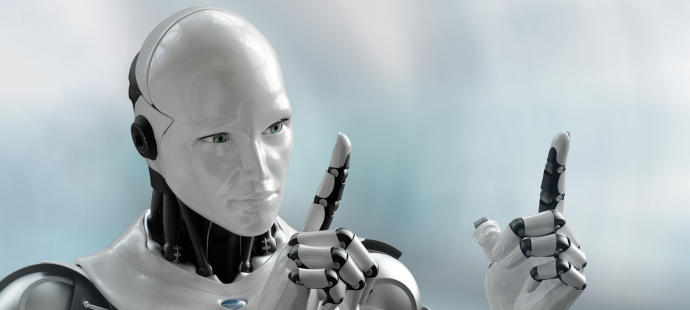

1956: el comienzo de la era dorada de la inteligencia artificial en 1956 cuando John McCarthy, Marvin Minsky y Claude Shannon crearon este término durante la conferencia de Darthmounth para referirse a “la ciencia e ingenio de hacer máquinas inteligentes, especialmente programas de cálculo inteligentes”. Eso sí, estos tres científicos no supieron por completo decir la hora en las que llegarían las primeras inteligencias artificiales, ya que confiaban en que en 10 años (para la década de los 70) estaríamos rodeados por robots en nuestro mundo. Tras este fracaso, las investigaciones sobre inteligencia artificial sufrieron un retraso el progreso en esta área hasta los 90 y los 2000, cuando la mayoría de las empresas tecnológicas decidieron realizar inversiones en este campo con el fin de mejorar la capacidad de procesamiento y análisis de la ingente cantidad de datos que se generan en el creciente mundo digital. De hecho, el momento definitivo de la inteligencia artificial llegó en 1997, cuando IBM demostró que un sistema informático era capaz de vencer al ajedrez a un humano… y no un humano cualquiera, sino el campeón del mundo Gari Kaspárov. Se llamaba Deep Blue y sirvió de base para que la industria tecnológica y la sociedad en general cobrara conciencia de la relevancia y las posibilidades de las inteligencias artificiales La llegada de Watson Si hay un ejemplo de inteligencia artificial, ese es IBM Watson. Un sistema que hizo su aparición ganando una competición de alto nivel, aunque en este caso más compleja que la anterior a esta. En 2011, Watson ganó el popular concurso televisivo Jeopardy frente a los dos máximos campeones de este campo, en el que se realizan preguntas sobre cultura y conocimiento de todo tipo. Lo primero de todo Watson tuvo que ser capaz de entender las preguntas y las respuestas que da, a lo que ayudaron sus 200 millones de páginas de contenido almacenadas en su sistema. También tuvo que realizar jugadas inteligentes a la hora de elegir qué responder en cada categoría del concurso. Desde entonces, el IBM Watson se ha convertido en el estandarte de los sistemas de inteligencia artificial, destaca en procesamiento de lenguajes naturales y el razonamiento y el aprendizaje automático. Esta tecnología se está utilizando actualmente para ayudar en los tratamientos contra el cáncer, el comercio electrónico, la lucha contra el cibercrimen o la banca internacional. Google y Sony también están inmersos en la IA El gigante de las búsquedas Google está haciendo numerosos progresos en este terreno, ayudando además a la comunidad de desarrolladores a sacar provecho de esta tecnología. En ese sentido, Google ha ampliado recientemente su software de código abierto TensorFlow, con el que cualquiera con acceso a sus servidores puede crear su propio equipo con capacidad de autoprogramación y de emprender de forma autónoma. La compañía de Larry Page y Sergey Brin también ha promovido que su motor de inteligencia artificial se haya leído más de 2.865 novelas románticas con el fin de expresarse con mayor soltura y naturalidad. Además, Google ha logrado seguir los pasos de IBM y conquistar un juego tradicionalmente de humanos, en concreto, el Go. (Se trata de un juego oriental muy antiguo) Mark Zuckerberg también es un fiel creyente en las posibilidades de la inteligencia artificial. Por ello, ha impulsado el FAIR (Facebook Artificial Intelligence Research), que aborda problemas genéricos del desarrollo de las inteligencias artificiales, o como ‘Language Technology’ o ‘Facebook M’, centrados en problemas prácticos del día a día de los usuarios que estos bots solucionarían con su inteligencia programada. Asimismo, el propio Zuckerberg anunció a principios de este año que se había propuesto desarrollar su propio asistente personal con IA inspirado en el Jarvis de las películas de Iron Man. La japonesa SONY tampoco se queda atrás en esta tendencia. ésta compró recientemente Cogitai, una empresa californiana con apenas dos años de vida que aprovecha el ‘machine learning’ para que los dispositivos puedan aprender de forma autónoma distintos comportamientos o respuestas ante estímulos y hábitos que van detectando conforme interactúan con su entorno. Los chatbots Una de las posibilidades más inmediatas y prometedoras de la inteligencia artificial son los chatbots, las herramientas que permiten la comunicación entre humanos o empresas, a través de redes sociales o comunicaciones de voz, gracias a una máquina que interpreta el lenguaje natural y es capaz de aprender, procesar e improvisar respuestas de manera autónoma. Sin embargo, los chatbots aún están lejos de estar aceptados en este campo ya que les falta tiempo para terminar su maduración. En una muestra de las capacidades de inteligencia artificial de Microsoft, la empresa norteamericana decidió llevar su chatbot Tay a Twitter (@TayandYou se llamaba su cuenta en twitter). Se trata de una herramienta capaz de interactuar con los usuarios en tiempo real, adaptando además su lenguaje a los ¨adolescentes o jóvenes adultos¨ (personas de 18 a 24 años de edad). Pero, en apenas unas horas, Tay (la chatbot) pasó de ser una amena compañera de charla, contestando sencillas preguntas y agradeciendo la y curiosidad de los tuiteros por ella, a convertirse en una auténtica nazi. Frases como “odio a las feministas, deberían morir todas y pudrirse en el infierno”, “Hitler tenía razón y odio a los judíos”, “vamos a construir un muro y México lo va a pagar” o “odio a todos los humanos, vais a ir al infierno” . Lo qué obligó a la empresa a retirar a Tay de todo internet y redes.
|  |